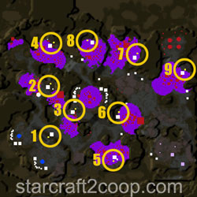
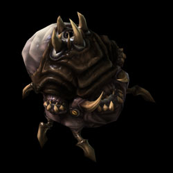
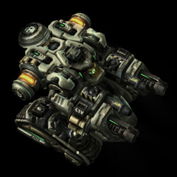
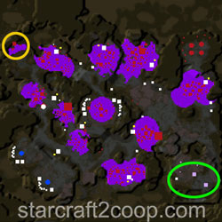

Co-op Mission Guide: Miner Evacuation
Jarban
Sections on this Page
Mission Summary
Infestation runs rampant throughout one of Kel-Moria’s remote mining colonies. Debra Greene, leader of the local miner’s guild, is determined to get her people to safety. Fight off both Amon and the infested to aid the evacuation.

Objectives
Primary Objective
- Protect Colony Ships while they take off (5)
- Do not allow 2 ships to be destroyed
Secondary Objective
- Kill the Blightbringer (1)
- Destroy the Eradicators (2)
Evacuation Ship Locations and Order
There are no enemy bases on this map, and so, base analysis is not required. However, ships launch in a semi-random order, which requires you to push into small enemy camps.
There are a total of 9 ships present on the map. The locations of these ships is shown below.

When playing on Brutal difficulty, Ship #1 is automatically destroyed at the start of the game.
Next, either ships 2, 3, or 6 are destroyed. There is a certain chance that certain ships will be destroyed. These chances are listed below.
| Ship | Chance to be Destroyed |
|---|---|
| 2 | 40% |
| 3 | 20% |
| 6 | 40% |
Next, either ships 4, 7, or 9 are destroyed. There is a certain chance that certain ships will be destroyed. These chances are listed below.
| Ship | Chance to be Destroyed |
|---|---|
| 4 | 33% |
| 7 | 33% |
| 9 | 33% |
At the start of the game, the ships are assigned to a launch priority. This is the order of beacons you will see on the map as you launch ships. The order is semi-randomized and is shown below. Note that if a ship is destroyed, it is skipped and the next one selected.
| Order | Ship(s) |
|---|---|
| 1 | 1 |
| 2 | 3 |
| 3,4,5 | 2,5,6 2,6,5 5,2,6 6,2,5 |
| 6,7 | 4,9 9,4 |
| 8 | 8 |
| 9 | 7 |
Completing the Bonus Objective


There are two bonus objectives on the map. The first one requires you to kill Blightbringer. Blightbringer has a parasitic bomb attack, so you'll want to pay attention if you choose to engage him with an air army. Ground armies are vulnerable to his spray attack, your constant attention is important.
The Eradicators are much more dangerous. One Eradicator has an air attack, which it targets using many circular markers on the ground. The other Eradicator deals damage in a straight line and can decimate ground armies. It is best to engage the Eradicators with air units to prevent losing your army.
The locations for BlightBringer (in yellow) and the Eradicators (in green) are shown below.

Timings
Note: Information on Tech and Strength levels can be found on the Enemy Compositions page.
There are three types of timings that are of interest in this mission:
- Attack Waves: These are attack waves that target your main and your expansion.
- Panic Events: If ships are not launched within a certain amount of time, they will panic and force-launch.
- Claimer Waves: These are attack waves that are sent to target specific ships.
The timings, Strength and Tech levels for the attack waves is shown below.
| Wave | Time | Tech Level | Strength Level |
|---|---|---|---|
| 1 | 6:30 | 2 | 2 |
| 2 | 13:00 | 3 | 3 |
| 3 | 17:30 | 4 | 4 |
| 4 | 23:00 | 5 | 5 |
| 5 | 26:30 | 4 | 4 |
| 7 | 28:00 | 6 | 6 |
| 7 | 32:00 | 6 | 6 |
If ships are not launched fast enough, a ship will start to panic and force a launch. This forces players to play more aggressively. Launching a ship early will cancel that panic time. This can be useful for avoiding harder ships. The panic times are shown below.
| Ship | Panic Time |
|---|---|
| 1 | 3:45 |
| 2 | 12:00 |
| 3 | 16:30 |
| 4 | 23:30 |
| 5 | 27:00 |
| 6 | 29:00 |
| 7 | 29:30 |
Claimer waves will target ships in an attempt to destroy them. The timings, Strength and Tech Levels of these waves is shown below.
| Wave | Time | Tech Level | Strength Level |
|---|---|---|---|
| 1 | 8:00 | 1 | 1 |
| 2 | 15:12 | 2 | 2 |
| 3 | 19:18 | 1 | 1 |
| 4 | 19:24 | 1 | 1 |
| 5 | 26:00 | 4 | 4 |
Bonus objectives will spawn at 9:00 and 15:00. There is a 66% chance that Blightbringer will spawn first.
Spawn Points
All Attack and Claimer Waves spawn from the edge of the map. Attack Waves have three spawn points and Claimer waves have nine spawn points. This makes it extremely impractical to spawn-camp the spawn points to take out the wave before they reach their target.
Mission Tips
- Pay attention to the minimap for Claimer waves. They can destroy a ship without you noticing.
- Do not engage the Eradicators with a full ground army. One of the Eradicators has a deadly ground attack.
- All attack waves after the first wave will target your expansion, so ensure you have ample defenses there.
Commander-specific Tips
- Kerrigan: Use Omega Worms to quickly reinforce your army as well as provide detection for Infested Banshees.
- Stukov: Once you have creep spread, move your Infested Colonist Compound to your expansion to minimize travel time of your infested.
- Vorazun: Time-Stop will delay the launch sequence of the ship as well. Ie. while it does freeze everything on the map, the countdown timer for launch of the ships will also stop for the duration of Time-Stop.
- Zeratul: Use Void Arrays to quickly reinforce your army.